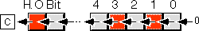
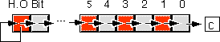
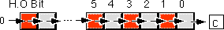
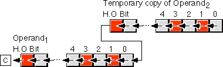
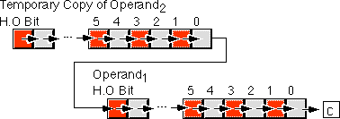
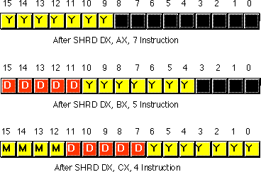
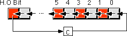
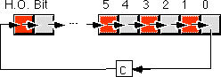
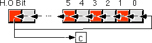
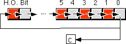

|
Table of Content | Chapter Six (Part 4) |
|
Table of Content | Chapter Six (Part 4) |
| CHAPTER
SIX: THE 80x86 INSTRUCTION SET (Part 3) |
|
| 6.6 -
Logical, Shift, Rotate and Bit Instructions 6.6.1 - The Logical Instructions: AND, OR, XOR, and NOT 6.6.2 - The Shift Instructions: SHL/SAL, SHR, SAR, SHLD, and SHRD 6.6.2.1 - SHL/SAL 6.6.2.2 - SAR 6.6.2.3 - SHR |
6.6.2.4
- The SHLD and SHRD Instructions 6.6.3 - The Rotate Instructions: RCL, RCR, ROL, and ROR 6.6.3.1 - RCL 6.6.3.2 - RCR 6.6.3.3 - ROL 6.6.3.4 - ROR |
| 6.6 Logical, Shift, Rotate and Bit Instructions | |
The 80x86 family provides five logical instructions, four
rotate instructions, and three shift instructions. The logical instructions are and,
or, xor, test, and not; the rotates are ror, rol, rcr,
and rcl; the shift instructions are shl/sal, shr, and sar.
The 80386 and later processors provide an even richer set of operations. These are bt,
bts, btr, btc, bsf, bsr, shld, shrd, and the conditional
set instructions (setcc).
These instructions can manipulate bits, convert values, do logical operations, pack and unpack data, and do arithmetic operations. The following sections describe each of these instructions in detail.
6.6.1 The Logical Instructions: AND, OR, XOR, and NOT
The 80x86 logical instructions operate on a bit-by-bit
basis. Both eight, sixteen, and thirty-two bit versions of each instruction exist. The and,
not, or, and xor instructions do the following:
and dest, source ;dest := dest and source
or dest, source ;dest := dest or source
xor dest, source ;dest := dest xor source
not dest ;dest := not dest
The specific variations are
and reg, reg
and mem, reg
and reg, mem
and reg, immediate data
and mem, immediate data
and eax/ax/al, immediate data
or uses the same formats as AND
xor uses the same formats as AND
not register
not mem
Except not, these instructions affect the
flags as follows:
The not instruction does not affect any flags.
Testing the zero flag after these instructions is
particularly useful. The and instruction sets the zero flag if the two
operands do not have any ones in corresponding bit positions (since this would produce a
zero result); for example, if the source operand contained a single one bit, then the zero
flag will be set if the corresponding destination bit is zero, it will be one otherwise.
The or instruction will only set the zero flag if both operands contain zero.
The xor instruction will set the zero flag only if both operands are equal.
Notice that the xor operation will produce a zero result if and only if the
two operands are equal. Many programmers commonly use this fact to clear a sixteen bit
register to zero since an instruction of the form
xor reg16, reg16
is shorter than the comparable mov reg,0
instruction.
Like the addition and subtraction instructions, the and,
or, and xor instructions provide special forms involving the
accumulator register and immediate data. These forms are shorter and sometimes faster than
the general "register, immediate" forms. Although one does not normally think of
operating on signed data with these instructions, the 80x86 does provide a special form of
the "reg/mem, immediate" instructions that sign extend a value in the range
-128..+127 to sixteen or thirty-two bits, as necessary.
The instruction's operands must all be the same size. On pre-80386 processors they can be eight or sixteen bits. On 80386 and later processors, they may be 32 bits long as well. These instructions compute the obvious bitwise logical operation on their operands, see Chapter One for details on these operations.
You can use the and instruction to set
selected bits to zero in the destination operand. This is known as masking out data; see
for more details. Likewise, you can use the or instruction to force certain
bits to one in the destination operand; see Chapter Nine for the details. You can use
these instructions, along with the shift and rotate instructions described next, to pack
and unpack data.
6.6.2 The Shift Instructions: SHL/SAL, SHR, SAR, SHLD, and SHRD
The 80x86 supports three different shift instructions (shl
and sal are the same instruction): shl (shift left), sal
(shift arithmetic left), shr (shift right), and sar (shift
arithmetic right). The 80386 and later processors provide two additional shifts: shld
and shrd.
The shift instructions move bits around in a register or memory location. The general format for a shift instruction is
shl dest, count
sal dest, count
shr dest, count
sar dest, count
Dest is the value to shift and count
specifies the number of bit positions to shift. For example, the shl
instruction shifts the bits in the destination operand to the left the number of bit
positions specified by the count operand. The shld and shrd
instructions use the format:
shld dest, source, count
shrd dest, source, count
The specific forms for these instructions are
shl reg, 1
shl mem, 1
shl reg, imm (2)
shl mem, imm (2)
shl reg, cl
shl mem, cl
sal is a synonym for shl and uses the same formats.
shr uses the same formats as shl.
sar uses the same formats as shl.
shld reg, reg, imm (3)
shld mem, reg, imm (3)
shld reg, reg, cl (3)
shld mem, reg, cl (3)
shrd uses the same formats as shld.
2- This form is available on 80286 and later processors only.
3- This form is available on 80386 and later processors only.
For 8088 and 8086 CPUs, the number of bits to shift is
either "1" or the value in cl. On 80286 and later processors you
can use an eight bit immediate constant. Of course, the value in cl or the
immediate constant should be less than or equal to the number of bits in the destination
operand. It would be a waste of time to shift left al by nine bits (eight
would produce the same result, as you will soon see). Algorithmically, you can think of
the shift operations with a count other than one as follows:
for temp := 1 to count do shift dest, 1
There are minor differences in the way the shift instructions treat the overflow flag when the count is not one, but you can ignore this most of the time.
The shl, sal, shr, and sar
instructions work on eight, sixteen, and thirty-two bit operands. The shld
and shrd instructions work on 16 and 32 bit destination operands only.
The shl and sal mnemonics are
synonyms. They represent the same instruction and use identical binary encodings. These
instructions move each bit in the destination operand one bit position to the left the
number of times specified by the count operand. Zeros fill vacated positions at the L.O.
bit; the H.O. bit shifts into the carry flag:

The shl/sal instruction sets the condition
code bits as follows:
shl instruction
doesn't affect any flags. shl/sal
instruction. The shift left instruction is especially useful for packing
data. For example, suppose you have two nibbles in al and ah
that you want to combine. You could use the following code to do this:
shl ah, 4 ;This form requires an 80286 or later
or al, ah ;Merge in H.O. four bits.
Of course, al must contain a value in the
range 0..F for this code to work properly (the shift left operation automatically clears
the L.O. four bits of ah before the or instruction). If the H.O.
four bits of al are not zero before this operation, you can easily clear them
with an and instruction:
shl ah, 4 ;Move L.O. bits to H.O. position.
and al, 0Fh ;Clear H.O. four bits.
or al, ah ;Merge the bits.
Since shifting an integer value to the left one position is equivalent to multiplying that value by two, you can also use the shift left instruction for multiplication by powers of two:
shl ax, 1 ;Equivalent to AX*2
shl ax, 2 ;Equivalent to AX*4
shl ax, 3 ;Equivalent to AX*8
shl ax, 4 ;Equivalent to AX*16
shl ax, 5 ;Equivlaent to AX*32
shl ax, 6 ;Equivalent to AX*64
shl ax, 7 ;Equivalent to AX*128
shl ax, 8 ;Equivalent to AX*256
etc.
Note that shl ax, 8 is equivalent to the
following two instructions:
mov ah, al
mov al, 0
The shl/sal instruction multiplies both signed
and unsigned values by two for each shift. This instruction sets the carry flag if the
result does not fit in the destination operand (i.e., unsigned overflow occurs). Likewise,
this instruction sets the overflow flag if the signed result does not fit in the
destination operation. This occurs when you shift a zero into the H.O. bit of a negative
number or you shift a one into the H.O. bit of a non-negative number.
The sar instruction shifts all the bits in the
destination operand to the right one bit, replicating the H.O. bit:

The sar instruction sets the flag bits as
follows:
sar instruction
doesn't affect any flags. sar
instruction. The sar instruction's main purpose is to
perform a signed division by some power of two. Each shift to the right divides the value
by two. Multiple right shifts divide the previous shifted result by two, so multiple
shifts produce the following results:
sar ax, 1 ;Signed division by 2
sar ax, 2 ;Signed division by 4
sar ax, 3 ;Signed division by 8
sar ax, 4 ;Signed division by 16
sar ax, 5 ;Signed division by 32
sar ax, 6 ;Signed division by 64
sar ax, 7 ;Signed division by 128
sar ax, 8 ;Signed division by 256
There is a very important difference between the sar
and idiv instructions. The idiv instruction always truncates towards zero
while sar truncates results toward the smaller result. For positive results,
an arithmetic shift right by one position produces the same result as an integer division
by two. However, if the quotient is negative, idiv truncates towards zero
while sar truncates towards negative infinity. The following examples
demonstrate the difference:
mov ax, -15
cwd
mov bx, 2
idiv ;Produces -7
mov ax, -15
sar ax, 1 ;Produces -8
Keep this in mind if you use sar for integer
division operations.
The sar ax, 8 instruction effectively copies ah
into al and then sign extends al into ax. This is
because sar ax, 8 will shift ah down into al but
leave a copy of ah's H.O. bit in all the bit positions of ah.
Indeed, you can use the sar instruction on 80286 and later processors to sign extend one
register into another. The following code sequences provide examples of this usage:
; Equivalent to CBW:
mov ah, al
sar ah, 7
; Equivalent to CWD:
mov dx, ax
sar dx, 15
; Equivalent to CDQ:
mov edx, eax
sar edx, 31
Of course it may seem silly to use two instructions where a
single instruction might suffice; however, the cbw, cwd, and cdq
instructions only sign extend al into ax, ax into dx:ax,
and eax into edx:eax. Likewise, the movsx instruction copies its
sign extended operand into a destination operand twice the size of the source operand. The
sar instruction lets you sign extend one register into another register of
the same size, with the second register containing the sign extension bits:
; Sign extend bx into cx:bx
mov cx, bx
sar cx, 15
The shr instruction shifts all the bits in the
destination operand to the right one bit shifting a zero into the H.O. bit:

The shr instruction sets the flag bits as
follows:
shr instruction
doesn't affect any flags. shr
instruction. The shift right instruction is especially useful for
unpacking data. For example, suppose you want to extract the two nibbles in the al
register, leaving the H.O. nibble in ah and the L.O. nibble in al.
You could use the following code to do this:
mov ah, al ;Get a copy of the H.O. nibble
shr ah, 4 ;Move H.O. to L.O. and clear H.O. nibble
and al, 0Fh ;Remove H.O. nibble from al
Since shifting an unsigned integer value to the right one position is equivalent to dividing that value by two, you can also use the shift right instruction for division by powers of two:
shr ax, 1 ;Equivalent to AX/2
shr ax, 2 ;Equivalent to AX/4
shr ax, 3 ;Equivalent to AX/8
shr ax, 4 ;Equivalent to AX/16
shr ax, 5 ;Equivlaent to AX/32
shr ax, 6 ;Equivalent to AX/64
shr ax, 7 ;Equivalent to AX/128
shr ax, 8 ;Equivalent to AX/256
etc.
Note that shr ax, 8 is equivalent to the
following two instructions:
mov al, ah mov ah, 0
Remember that division by two using shr only
works for unsigned operands. If ax contains -1 and you execute shr ax,
1 the result in ax will be 32767 (7FFFh), not -1 or zero as you would
expect. Use the sar instruction if you need to divide a signed integer by
some power of two.
6.6.2.4 The SHLD and SHRD Instructions
The shld and shrd instructions
provide double precision shift left and right operations, respectively. These instructions
are available only on 80386 and later processors. Their generic forms are
shld operand1, operand2, immediate
shld operand1, operand2, cl
shrd operand1, operand2, immediate
shrd operand1, operand2, cl
Operand2 must be a sixteen or thirty-two bit
register. Operand1 can be a register or a memory location. Both operands must
be the same size. The immediate operand can be a value in the range zero through n-1,
where n is the number of bits in the two operands; it specifies the number of bits to
shift.
The shld instruction shifts bits in operand1
to the left. The H.O. bit shifts into the carry flag and the H.O. bit of operand2
shifts into the L.O. bit of operand1. Note that this instruction does not
modify the value of operand2, it uses a temporary copy of operand2 during the shift. The
immediate operand specifies the number of bits to shift. If the count is n, then shld
shifts bit n-1 into the carry flag. It also shifts the H.O. n bits of operand2 into the
L.O. n bits of operand1. Pictorially, the shld instruction is:

The shld instruction sets the flag bits as
follows:
The shld instruction is useful for packing data from many different sources. For example, suppose you want to create a word by merging the H.O. nibbles of four other words. You could do this with the following code:
mov ax, Value4 ;Get H.O. nibble
shld bx, ax, 4 ;Copy H.O. bits of AX to BX.
mov ax, Value3 ;Get nibble #2.
shld bx, ax, 4 ;Merge into bx.
mov ax, Value2 ;Get nibble #1.
shld bx, ax, 4 ;Merge into bx.
mov ax, Value1 ;Get L.O. nibble
shld bx, ax, 4 ;BX now contains all four nibbles.
The shrd instruction is similar to shld
except, of course, it shifts its bits right rather than left. To get a clear picture of
the shrd instruction, consider:

The shrd instruction sets the flag bits as
follows:
shrd
instruction doesn't affect any flags. Quite frankly, these two instructions would probably be
slightly more useful if Operand2 could be a memory location. Intel designed
these instructions to allow fast multiprecision (64 bits, or more) shifts.
The shrd instruction is marginally more useful
than shld for packing data. For example, suppose that ax
contains a value in the range 0..99 representing a year (1900..1999), bx
contains a value in the range 1..31 representing a day, and cx contains a
value in the range 1..12 representing a month (see Chapter One). You can easily use the
shrd instruction to pack this data into dx as follows:
shrd dx, ax, 7
shrd dx, bx, 5
shrd dx, cx, 4

The rotate instructions shift the bits around, just like
the shift instructions, except the bits shifted out of the operand by the rotate
instructions recirculate through the operand. They include rcl (rotate
through carry left), rcr (rotate through carry right), rol
(rotate left), and ror (rotate right). These instructions all take the forms:
rcl dest, count
rol dest, count
rcr dest, count
ror dest, count
The specific forms are
rcl reg, 1
rcl mem, 1
rcl reg, imm (2)
rcl mem, imm (2)
rcl reg, cl
rcl mem, cl
rol uses the same formats as rcl.
rcr uses the same formats as rcl.
ror uses the same formats as rcl.
2- This form is avialable on 80286 and later processors only.
The rcl (rotate through carry left), as its
name implies, rotates bits to the left, through the carry flag, and back into bit zero on
the right:

Note that if you rotate through carry an object n+1 times,
where n is the number of bits in the object, you wind up with your original value. Keep in
mind, however, that some flags may contain different values after n+1 rcl
operations.
The rcl instruction sets the flag bits as
follows:
rcl sets the
overflow flag if the sign changes as a result of the rotate. If the count is not one, the
overflow flag is undefined. rcl instruction does not modify the zero,
sign, parity, or auxiliary carry flags. Important warning: unlike the shift instructions, the
rotate instructions do not affect the sign, zero, parity, or auxiliary carry flags. This
lack of orthogonality can cause you lots of grief if you forget it and attempt to test
these flags after an rcl operation. If you need to test one of these flags
after an rcl operation, test the carry and overflow flags first (if
necessary) then compare the result to zero to set the other flags.
The rcr (rotate through carry right)
instruction is the complement to the rcl instruction. It shifts its bits
right through the carry flag and back into the H.O. bit:

This instruction sets the flags in a manner analogous to rcl:
rcr sets the
overflow flag if the sign changes (meaning the values of the H.O. bit and carry flag were
not the same before the execution of the instruction). However, if the count is not one,
the value of the overflow flag is undefined. rcr instruction does not affect the zero,
sign, parity, or auxiliary carry flags. Keep in mind the warning given for rcl above.
The rol instruction is similar to the rcl
instruction in that it rotates its operand to the left the specified number of bits. The
major difference is that rol shifts its operand's H.O. bit, rather than the
carry, into bit zero. Rol also copies the output of the H.O. bit into the
carry flag:

The rol instruction sets the flags identically
to rcl. Other than the source of the value shifted into bit zero, this
instruction behaves exactly like the rcl instruction. Don't forget the
warning about the flags!
Like shl, the rol instruction is
often useful for packing and unpacking data. For example, suppose you want to extract bits
10..14 in ax and leave these bits in bits 0..4. The following code sequences
will both accomplish this:
shr ax, 10
and ax, 1Fh
rol ax, 6
and ax, 1Fh
The ror instruction relates to the rcr
instruction in much the same way that the rol instruction relates to rcl.
That is, it is almost the same operation other than the source of the input bit to the
operand. Rather than shifting the previous carry flag into the H.O. bit of the destination
operation, ror shifts bit zero into the H.O. bit:

The ror instruction sets the flags identically
to rcr. Other than the source of the bit shifted into the H.O. bit, this
instruction behaves exactly like the rcr instruction. Don't forget the
warning about the flags!
|
Table of Content | Chapter Six (Part 4) |
Chapter Six: The 80x86 Instruction
Set (Part 3)
26 SEP 1996